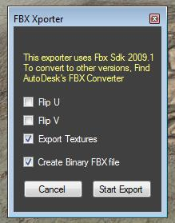

Exporting a Tank....
To export a tank, first load one...
After, on the top menu, under Export/Extract, click on Export FBX.
Select a place to store your FBX. I usually create a work folder on my desktop called "Exported FBX".
After you chose where to write the FBX to, the FBX Xporter panel will popup. (purposely spelled wrong)
|  | Flip U and V can be handy if for some reason the texture mapping is wrong in your 3D editing application. Click Export to write out the new FBX file. After, you can import it in your 3D application. |